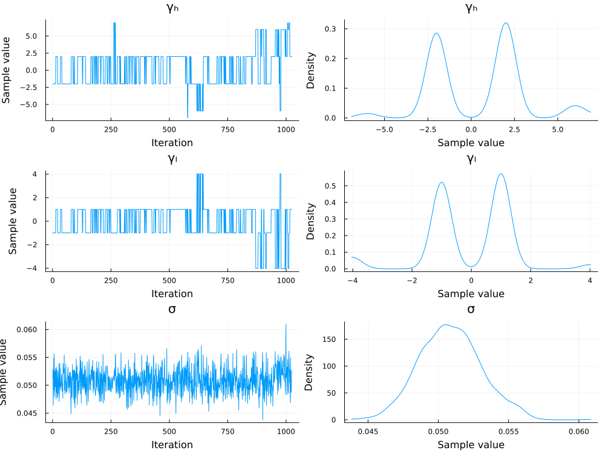

Parameter Estimation
This brief tutorial explains how to performance Bayesian parameter estimation of the QPDM using Pigeons.jl. One complication in estimating the parameters of the QPDM is that the posterior distributions may have multiple modes, which leads to convergence problems with most MCMC algorithms. Pigeons.jl uses a special type of parallel tempering to overcome this challenge. An additional advantage of using Pigeons.jl is the ability to compute Bayes factors from the log marginal likelihood using the function stepping_stone.
Load Packages
First, we will load the required packages below.
using Pigeons
using QuantumOrderEffectModels
using Random
using StatsPlots
using TuringGenerate Simulated Data
The next step is to generate some simulated data from which the parameters can be estimated. In the code block below, the utility parameter $\mu_d$ is set to one and the entanglement parameter is set to $\gamma = 2$. A total of 50 trials is generated for each of the three conditions. The resulting values represent the number of defections per condition out of 50.
Random.seed!(16)
Ψ = @. √([.35,.35,.15,.15])
parms = (Ψ, γₕ = 2.0, γₗ = 1.0, σ = .05)
n_trials = 50
model = QOEM(;parms...)
data = rand(model, n_trials)Define Turing Model
The next step is to define a Turing model with the @model macro. We will estimate the entanglement parameters using the prior $\gamma_j \sim \mathrm{normal}(0,3)$. The other parameters will be fixed to the data generating values defined in the code block above.
@model function turing_model(data, parms)
γₕ ~ Normal(0, 3)
γₗ ~ Normal(0, 3)
σ ~ LogNormal(-1, 1)
data ~ QOEM(;parms..., γₕ, γₗ, σ)
endEstimate Parameters
To estimate the parameters, we need to pass the Turing model to pigeons. The second command converts the output to an MCMCChain object, which can be used for plotting
pt = pigeons(
target=TuringLogPotential(turing_model(data, parms)),
record=[traces],
multithreaded=true)
samples = Chains(sample_array(pt), ["γₕ", "γₗ","σ"])
plot(samples)The trace of the pigeon's sampler is given below:
────────────────────────────────────────────────────────────────────────────
scans Λ log(Z₁/Z₀) min(α) mean(α) min(αₑ) mean(αₑ)
────────── ────────── ────────── ────────── ────────── ────────── ──────────
2 4.9 -150 0 0.456 0.857 0.961
4 2.47 402 1.61e-23 0.726 0.973 0.997
8 5.03 444 0.000401 0.441 1 1
16 5.27 459 0.136 0.415 0.993 0.999
32 6.11 461 0.0646 0.321 1 1
64 5.51 466 0.232 0.388 1 1
128 5.13 470 0.257 0.43 0.997 1
256 5.18 469 0.311 0.425 0.998 1
512 5.14 469 0.347 0.429 0.999 1
1.02e+03 5.14 469 0.398 0.429 0.998 1
────────────────────────────────────────────────────────────────────────────Plot Posterior Distribution
Now we can plot the posterior distribution of $\gamma$ with plot. The posterior distribution of $\gamma$ has a primary mode around 1 and secondary modes around 2 and 3.5.
plot(samples)